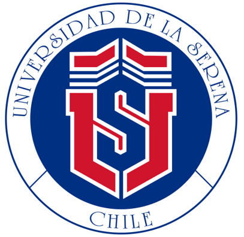
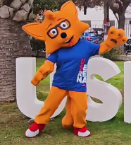
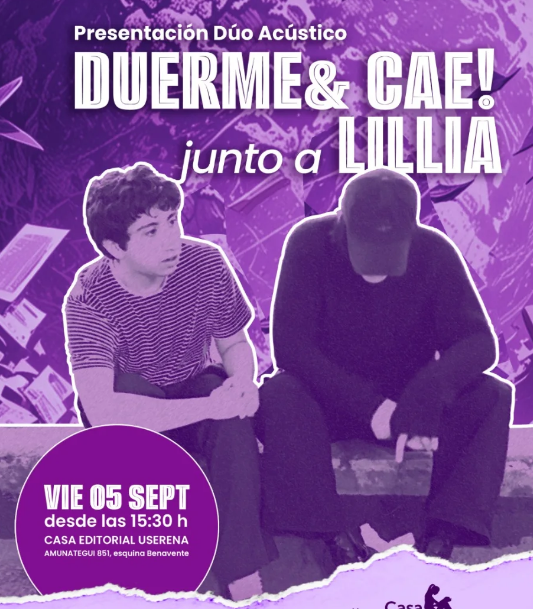

Actualizaciones oficiales
Actualizaciones oficiales de la universidad, comunicados importantes y anuncios académicos.
Este sitio está diseñado para centralizar y difundir información relevante de la Universidad de La Serena. Aquí encontrarás noticias, actividades, logros estudiantiles y comunicados oficiales que fortalecen la vida universitaria.

Actualizaciones oficiales de la universidad, comunicados importantes y anuncios académicos.

Proyectos, eventos y actividades organizadas por y para estudiantes, que reflejan la vida universitaria.

Reconocimientos, premios y noticias sobresalientes que marcan hitos en la comunidad universitaria.